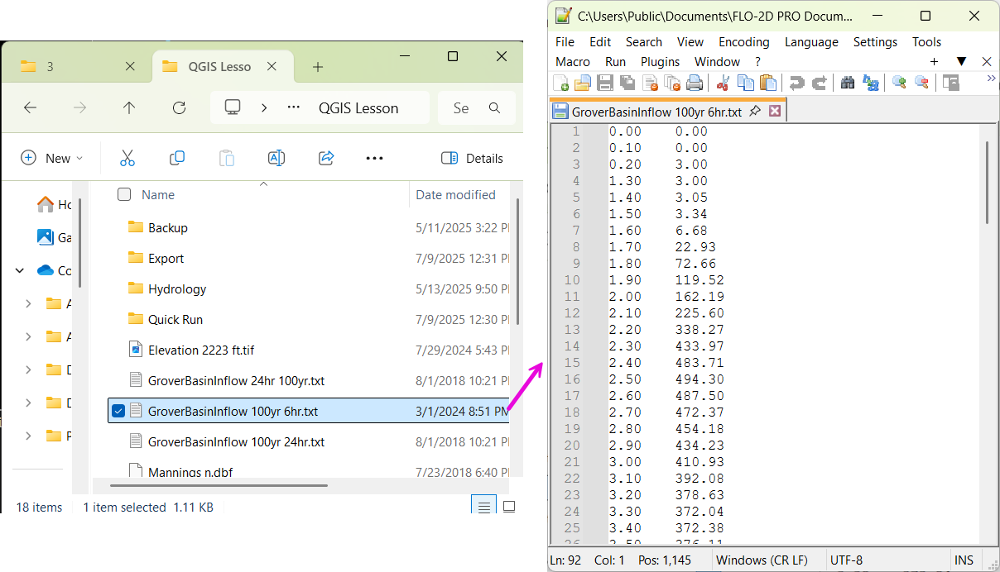
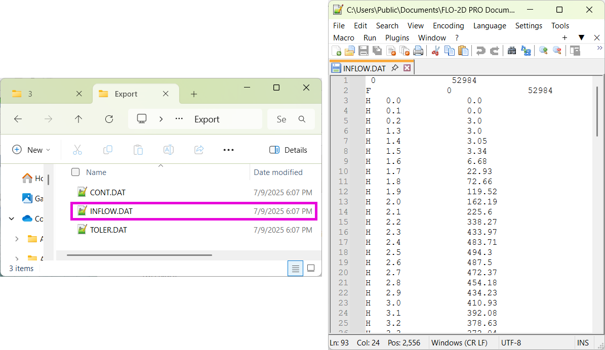

Hydrology
Learn how to set up rainfall and infiltration using QGIS and the FLO-2D Gila Plugin.
Note
It will be easier to view these videos on YouTube.
Set the video playback speed to 2x to complete the lessons faster.
The videos are more detailed whereas the text gives the minimum steps needed to complete the project.
Load the Project
This lesson shows how to load a FLO-2D project in QGIS, manage paths, and handle GeoPackage data.
Step 1: Launch QGIS
Open the QGIS application.
You can pin QGIS to your Start Menu for quicker access.
Tip
To avoid searching for QGIS every time, right-click the QGIS icon and select “Pin to Start.”
Step 2: Open Your Project
If QGIS opens your most recent project, simply click on it in the Recent Projects list.
If the project was moved and no longer loads: - Go to Plugins > FLO-2D > Open FLO-2D Project. - Navigate to your project .gpkg file (GeoPackage) and select it.
Note
The GeoPackage contains your entire project, including the .qgz file.
Assign an Inflow Node
This tutorial shows how to create an inflow boundary condition at a project edge where an upstream channel—Cave Creek—enters the basin. This is useful when modeling runoff entering the system from offsite.
Step 2: Add an Inflow Node
In FLO-2D Panel, click Collapse All to clear any open panels.
Expand Boundary Condition Editor.
Choose the Inflow Node option.
Click Add Point, then click on the map at the outlet of the structure (culvert with dissipator and grate).
Click OK to create the inflow point, and then click the Add Point button again to save it.
Step 3: Rename the Inflow Point
Click Rename, and rename to “Grover Basin Inflow”
Step 4: Create a Time Series
Go to the Time Series Editor.
Click Rename, and rename “Time Series 1” to “GroverIn 100yr 6hr”
This is a 100-year, 6-hour inflow hydrograph taken from the original larger project.
Set the Type to: Floodplain
Warning
Do not select Channel unless modeling a direct stream. This is surface runoff entering the basin.
Step 5: Paste Hydrograph Data
Open the provided hydrograph data file from Lesson 1 Data. - Choose the 100yr 6hr inflow file.
Time should be in hours on the left and discharge (cfs) on the right.
Select all data with Ctrl+A, then copy with Ctrl+C.
Close the file with Ctrl+W.
In the QGIS Time Series Editor, click the first cell and paste using Ctrl+V.
Note
FLO-2D automatically uses cubic feet per second for discharge. Use metric units only if your model is in metric.
Step 6: Schematize the Data
Click Schematize to convert the pasted user input into FLO-2D schema data.
Step 7: Export the Inflow File
Right-click the inflow node and choose Export > Data.
Set the export folder and confirm.
Select only the Inflow Elements, not all files.
You will now have a file called INFLOW.DAT.
Assign Rainfall
In this lesson, we assign rainfall to a FLO-2D project. You will learn how to use the Rain Editor, apply uniform rainfall, and optionally sample spatially variable rainfall from NOAA Atlas data.
Step 1: Open the Rain Editor
In FLO-2D Panel, click Collapse All to clear any open panels.
Expand Rain Editor.
Check Simulate Rainfall.
Set the Total Rainfall Depth to
2.65 in(this example uses a 6-hour, 100-year event).Leave Rainfall Abstraction at
0.0for now. This is set elsewhere.Check Apply Building Rain.
Step 2: Add a Storm Pattern
Click Open next to the storm pattern.
Navigate to the FLO-2D documentation folder and find the 6-hour event distribution. Choose the first pattern from the list.
Confirm the time-percent curve was imported correctly.
Important
The rainfall distribution table has:
Time (hours) on the left.
Cumulative rainfall (0–1) on the right.
The percent values must start at time = 0 and rainfall = 0.
Step 3: Understanding Rain on Grid
Rainfall is applied uniformly across all grid elements.
Every element receives 2.65 inches following the selected pattern.
This is called “rain on grid”, and it is different from assigning rainfall to subcatchments.
Tip
Rain on grid works well for small projects. For large areas, continue to Step 4.
Step 4: Sample a Rainfall Raster (Optional)
You can use a NOAA Atlas 14 rainfall raster to apply spatially variable rainfall.
Drag your 24-hour rainfall raster into QGIS.
Right-click the layer > Zoom to Layer.
Check the data: it should be in inches and match your coordinate system.
To apply the raster:
Go to the Rain Editor.
Check Sample from Raster.
Select your raster file.
Leave “Fill NoData” unchecked if not needed.
Click OK and confirm.
QGIS will now sample rainfall values from the raster to each grid element based on spatial location.
Note
The sampling uses the centroid of each grid element and computes a point reduction factor based on the maximum raster value. It is not a depth-area reduction, but rather a point-based rainfall adjustment.
Step 5: Export Rainfall Data
Check Control Parameters:
The rainfall switch is turned on automatically when you check Simulate Rainfall. Click Save.
Export DAT Files.
This will generate a
RAIN.DATfile in your export folder.
Tip
If RAIN.DAT is missing an asterisk, your data has been successfully exported.
Inside the RAIN.DAT file:
- 0 = uniform rainfall
- 1 = rain-on-building (not used here)
- Total rainfall is listed
- A distribution pattern is defined
- Each grid element gets a reduction factor based on the raster (e.g., 0.999)
Note
Raster values are sampled, warped to match the grid, and averaged by pixel intersection. A ratio is calculated between each grid cell’s rainfall and the maximum value, generating a point reduction factor.
Wrap-up
You’ve now assigned both uniform and spatially variable rainfall to your project. When ready, run your model to simulate rainfall input across the grid.
Infiltration
Important
FLO-2D uses three infiltration types. Choose one lesson and skip the other two.
Save Export and Run
This lesson covers the final steps before running your FLO-2D simulation. You will learn how to save your project, export model data, and run the simulation using the Quick Run tool.
Step 1: Save Your Project
Remove unneeded scratch layers: - Right-click any temporary layers you no longer need and select Remove.
Click the Save Project button.
When prompted, click Yes to save scratch layers into the GeoPackage. - This ensures they are committed and safely stored with your project file.
Tip
Scratch layers must be saved to preserve your data across sessions.
Step 2: Export Data Using Quick Run
Use Quick Run to export and simulate in one step.
Quick Run is only available if your project does not include storm drains.
To use Quick Run:
- Click Quick Run from the FLO-2D toolbar.
- Create a new folder (e.g., quick_run) for the export.
- Select this folder when prompted.
Note
The Build 26 FLO-2D engine is capable of running models with *.DAT or input.hdf5 formats.
The plugin will: - Export all required .DAT files - Automatically launch the simulation upon successful export
Step 3: Wait for Simulation to Start
Once data is exported, the model will begin running.
Watch for early rainfall values in the results window. - Rainfall accumulation (e.g., ~0.1 in) will appear first. - Ponded water will start appearing on the grid. - Water will flow down streets and terrain according to the grid and infiltration settings.
Note
Simulation results should show flow routing from rainfall across your modeled surface and toward low-lying areas.
Wrap-up
You’ve now saved your project, exported model inputs, and initiated a run using Quick Run. The next lesson will guide you through reviewing and visualizing your simulation results.